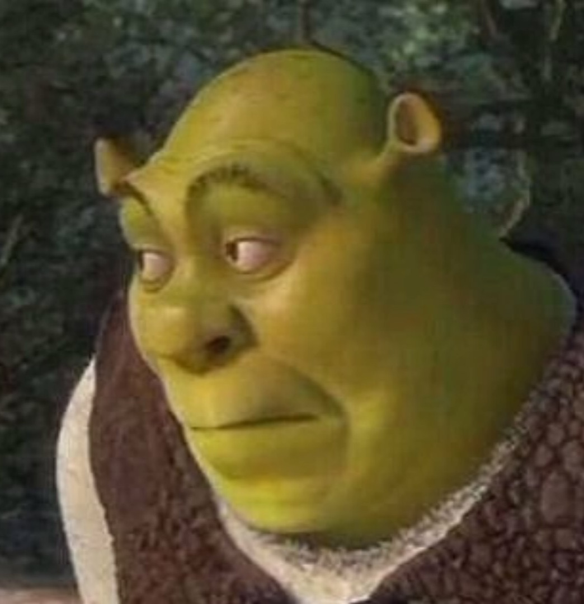

| Kill Bill |
|
Mamba Negra es una asesina que, el día de su boda, es atacada por los miembros de la banda de su jefe, Bill. Sin embargo consigue sobrevivir, aunque queda en coma. Cinco años después despierta, con un deseo de venganza. |
Quentin Tarantino |
Uma Thurman, Lucy Liu, David Carradine |
| La Bruja |
|
William, su esposa y sus cinco hijos son desterrados de su pueblo y se ven obligados a construir un nuevo hogar a las afueras de un inhóspito bosque. El delito de William ha sido acusar a los miembros de su comunidad de no ser verdaderos cristianos y proclamar que él es el único que predica el verdadero Evangelio. |
Robert Eggers |
Anya Taylor Joy |
| LOTR |
|
En la Tierra Media, el Señor Oscuro Sauron forjó los Grandes Anillos del Poder y creó uno con el poder de esclavizar a toda la Tierra Media. Frodo Bolsón es un hobbit al que su tío Bilbo hace portador del poderoso Anillo Único con la misión de destruirlo. |
Peter Jackson |
Viggo Mortensen, Ian Mckellen, Elijah Wood |
| Shrek |
 |
Hace mucho tiempo, en una lejana ciénaga, vivía un ogro llamado Shrek. |
Andrew Adamson & Vicky Jenson |
Eddie Murphy, Mike Myers |
| Star Wars: Episodio III |
 |
Los Caballeros Jedi se han esparcido por toda la galaxia, dirigiendo un ejército clon masivo para enfrentar a los Separatistas Galácticos, tres años después del inicio de las Guerras Clon. El Canciller Palpatine fue secuestrado y el Maestro Jedi Obi-Wan Kenobi, acompañado de su aprendiz Anakin Skywalker, es enviado a rescatarlo en una misión, donde también debe eliminar a los Líderes Separatistas, el Conde Dooku y el General Grievous, para concluir el conflicto galáctico. |
George Lucas |
Hayden Christensen, Ewan Mcgregor |